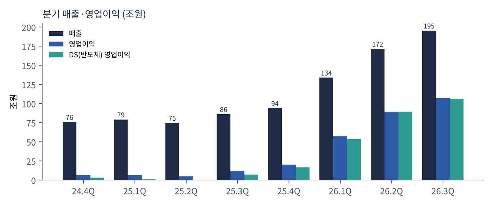
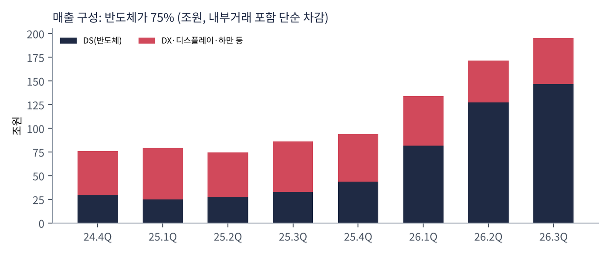
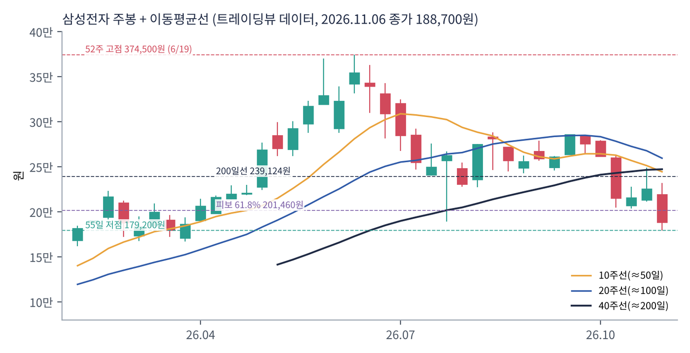
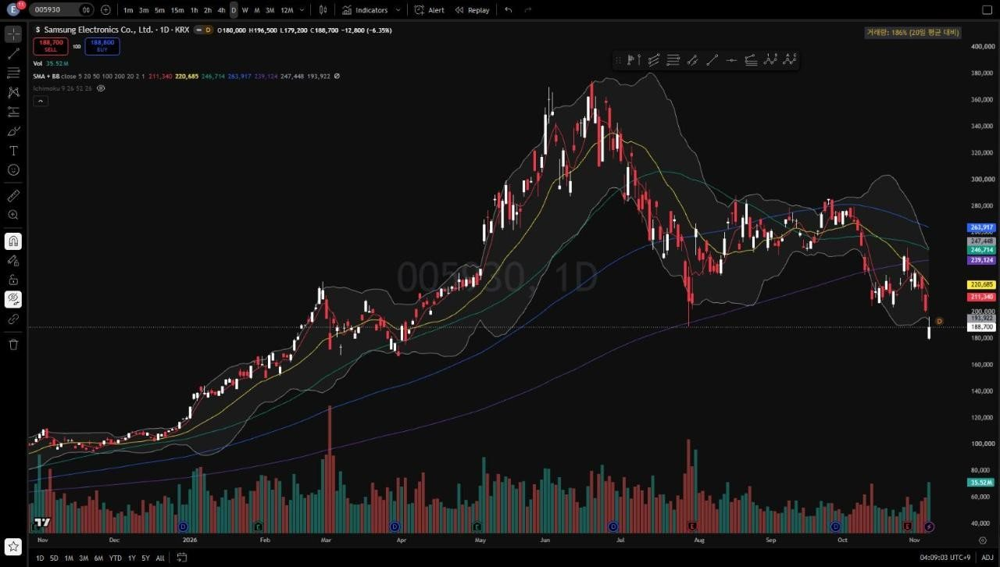
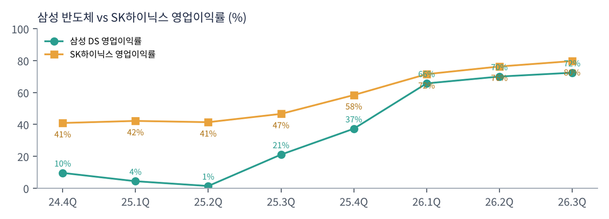

삼성전자는 메모리 반도체 세계 1위(D램·낸드), 파운드리 세계 2위, 스마트폰·TV·가전 세계 최상위권 회사다. 반도체를 담당하는 DS(Device Solutions)와 완제품을 담당하는 DX(Device eXperience), 자회사 삼성디스플레이(SDC)·하만으로 이뤄진다.
| 항목 | 내용 |
|---|---|
| 종목 | 삼성전자 (005930) · 반도체·전자 · 1969년 설립 · 본사 경기도 수원 |
| 시가총액 | 약 1,390조 원 (11/6 종가, 트레이딩뷰 기준) |
| 최근 분기(26.3Q) | 매출 195.3조 원(+127%), 영업이익 107.4조 원(+783%), 순이익 75.1조 원, EPS 11,462원 |
| 밸류에이션 | 3분기 EPS 연환산 약 4.6만 원 → PER 약 4배. 순현금 197.6조 원(시총의 약 14%) |
| 주주환원 | 3분기 배당 30조 원(주당 4,601원). 2026년 총 90~110조 원, 잔여 55~75조 원은 배당 + 자사주 매입·소각 |
| 시설투자 | 2026년 84.4조 원(DS 76.8조, 디스플레이 3.9조). 3분기 유형자산 취득 26.9조 원 |
| 분기 | 매출 | YoY | 영업이익 | 이익률 | DS 매출 | DS 영업이익 | DS 이익률 | DX 영업이익 |
|---|---|---|---|---|---|---|---|---|
| 2024.4Q | 75.8조 | +12% | 6.5조 | 8.6% | 30.1조 | 2.9조 | 9.6% | 2.3조 |
| 2025.1Q | 79.1조 | +10% | 6.7조 | 8.5% | 25.1조 | 1.1조 | 4.4% | 4.7조 |
| 2025.2Q | 74.6조 | +1% | 4.7조 | 6.3% | 27.9조 | 0.4조 | 1.4% | 3.1조 |
| 2025.3Q | 86.1조 | +9% | 12.2조 | 14.2% | 33.1조 | 7.0조 | 21.1% | 3.5조 |
| 2025.4Q | 93.8조 | +24% | 20.1조 | 21.4% | 44.0조 | 16.4조 | 37.3% | 1.3조 |
| 2026.1Q | 133.9조 | +69% | 57.2조 | 42.7% | 81.7조 | 53.7조 | 65.7% | 3.0조 |
| 2026.2Q | 171.5조 | +130% | 89.5조 | 52.2% | 127.5조 | 89.2조 | 70.0% | 0.8조 |
| 2026.3Q | 195.3조 | +127% | 107.4조 | 55.0% | 147.1조 | 106.5조 | 72.4% | -0.8조 |

2025년 상반기까지는 '삼성 위기론'의 시기였다. DS 영업이익이 1조 원 안팎으로 떨어졌고(2025년 2분기 0.4조 원), HBM에서 SK하이닉스에 밀리고 파운드리는 적자였다. 반전은 2025년 하반기 범용 D램 가격 급등에서 시작됐다. 규모가 가장 큰 삼성이 가격 상승의 수혜를 가장 크게 받았고, 2026년 2월 HBM4 양산으로 AI 메모리에서도 따라붙었다.
완제품은 메모리 호황의 피해자다. DX 영업이익은 2025년 1분기 4.7조 원에서 2026년 3분기 -0.8조 원으로 내려갔다. 스마트폰(MX/NW)은 3분기 매출 37.7조 원으로 늘었지만 -0.6조 원 적자, TV·가전(VD/DA)도 -0.2조 원이다. 회사는 "메모리 가격 상승 등 비용 부담 확대"를 이유로 들었다. 삼성 안에서 반도체가 번 돈으로 완제품의 원가 부담을 메우는 구조가 됐다.

3분기에는 환율이 이익을 약 10조 원 깎았다. 달러·유로 약세로 부품 사업을 중심으로 전 분기 대비 약 10조 원의 부정적 효과가 났다. 이를 감안하면 반도체 본업의 개선 폭은 숫자보다 더 컸다. 연구개발비는 14.4조 원이다.
| 항목 | 2025.3Q | 2026.2Q | 2026.3Q |
|---|---|---|---|
| 현금 등 | 108.5조 | 190.0조 | 214.8조 |
| 순현금 | 91.8조 | 167.6조 | 197.6조 |
| 유형자산 취득(시설투자) | 10.8조 | 14.1조 | 26.9조 |
| 순이익(지배주주) | 12.0조 | 71.3조 | 75.2조 |
| EPS(보통주) | 1,802원 | 10,849원 | 11,462원 |
트레이딩뷰 005930 일봉 300개(2025.8 ~ 2026.11.6)와 주봉으로 계산했다. 결론부터 말하면 1년 만에 5배 오른 뒤 5개월 동안 절반을 반납했다. 단기·중기 추세는 하락이고, 50/200일 교차와 12개월 모멘텀만 상승 쪽에 남았다.


위: 주봉 재구성 차트. 아래: 트레이딩뷰 일봉 캡처(작도 없이 이동평균선·볼린저밴드만 표시).
| 이동평균 | 값 | 종가 대비 | 해석 |
|---|---|---|---|
| 5일선 | 211,340원 | -10.7% | 11/5~6 이틀 연속 급락(-7.6%, -6.4%) |
| 20일선 | 220,685원 | -14.5% | 10월 중순 이후 하락 전환 |
| 50일선 | 246,714원 | -23.5% | 9~10월 박스(245,000~285,000원)의 중심 |
| 100일선 | 263,917원 | -28.5% | 하락 중. 50일선보다 위 — 중기 역배열 진행 |
| 200일선 | 239,124원 | -21.1% | 10월 둘째 주 이탈, 7월 말 이후 두 번째 |
배열은 100일 > 50일 > 200일 > 20일 > 5일 > 주가다. 6월 고점 이후 7월 말 189,200원까지 1차 급락, 8~10월 245,000~285,000원 박스, 10월 둘째 주 박스 하단 이탈(262,000 → 215,500원, 한 주 -18%), 11월 첫 주 다시 -16%로 이어졌다. 11/6 종가 188,700원은 7월 말 저점(189,200원)과 같은 높이로, 쌍바닥이냐 붕괴냐의 갈림길이다.
| 규칙 | 기준 | 현재 값 | 신호 |
|---|---|---|---|
| 장기 추세 필터 | 종가 vs 200일선 | 188,700 < 239,124 | 매도 |
| 중장기 교차 | 50일선 vs 200일선 | 246,714 > 239,124 | 매수 |
| 단기 교차 | 20일선 vs 50일선 | 220,685 < 246,714 | 매도 |
| 돈키언 채널 | 55일 고가·저가 | 11/6 179,200원으로 55일 최저가 | 매도 |
| 1개월 모멘텀 | 21거래일 수익률 | -29.7% (기준 268,500원) | 매도 |
| 3개월 모멘텀 | 63거래일 수익률 | -21.4% (기준 240,000원) | 매도 |
| 6개월 모멘텀 | 126거래일 수익률 | -14.4% (기준 220,500원) | 매도 |
| 12개월 모멘텀 | 252거래일 수익률 | +85.0% (기준 102,000원) | 매수 |
| 종합 (8개 평균) | -0.50 | 매도 | |
해석: 단기·중기 신호는 모두 매도다. 12개월 모멘텀이 +85%로 크게 남은 것은 1년 전 가격이 10만 원대였기 때문인데, 기준 가격이 2026년 1~2월 14~19만 원대로 빠르게 올라간다. 지금 주가가 유지되면 2027년 2월 전후로 12개월 신호도 매도로 바뀐다. 50일선(246,714원)과 200일선(239,124원)의 간격도 7,600원으로 좁아 몇 주 안에 데드크로스가 날 수 있다. 14일 ATR은 15,518원(주가의 8.2%)이다.
| 가격 | 무엇이 바뀌나 | 의미 |
|---|---|---|
| 220,500원 | 6개월 모멘텀 기준·20일선 | 회복 시 매도 신호 2개 감소 |
| 239,000 ~ 240,000원 | 200일선 + 3개월 기준 | 장기 추세 필터 매수 전환 — 추세 복귀 확인 |
| 50일선 < 200일선 | 데드크로스 | 종합 -0.75로 악화 |
| 구분 | 가격대 | 근거 |
|---|---|---|
| 저항 2 | 239,000 ~ 247,000원 | 200일선·50일선, 8~10월 박스 하단 |
| 저항 1 | 201,000 ~ 211,000원 | 피보나치 61.8%(201,460원), 11/5 종가, 5일선 |
| 지지 1 | 179,000 ~ 189,000원 | 11/6 저가 179,200원, 7월 말 저점 189,200원 |
| 지지 2 | 167,000 ~ 172,000원 | 3월 저점(167,000·171,900원) |
| 지지 3 | 154,000원 | 피보나치 78.6%(11월 저점 94,500원 → 6월 고점 374,500원) |
기본 판단: 숫자는 역대 최고, 주가는 '정점 논쟁'에 갇혀 있다. PER 4배는 사이클 산업이 정점일 때 흔히 나타나는 숫자다. 시장은 2027~2028년 신규 팹 가동으로 공급이 늘면 가격이 꺾일 것을 걱정한다. 회사는 반대로 "2027년 공급 부족이 올해보다 심화"를 말한다. 이 논쟁이 풀리기 전까지 반등은 저항대(201,000~247,000원)에서 막힐 가능성이 크다.
| 가격대 | 시나리오 | 대응 |
|---|---|---|
| 247,000원 이상 | 박스 복귀 | 잔여 추세 추종 |
| 239,000원 종가 회복 | 장기 추세 필터 매수 전환 | 2차 익절 + 추세 매수 추가 |
| 170,000 ~ 189,000원 | 쌍바닥 테스트 | 분할 매수 50% |
| 160,000원 이하 종가 | 지지 붕괴 | 손절 |
| 154,000원 이하 | 피보나치 78.6% 이탈 | 관망 |
2026년 3분기 부문별 실적을 보면 삼성전자는 사실상 '메모리 회사'가 됐다. 1년 전만 해도 매출의 40%가 스마트폰·가전이었다.
| 부문 | 돈을 버는 방식 | 매출 | 영업이익 |
|---|---|---|---|
| 메모리 (DS) | D램(HBM·서버 DDR5·모바일 LPDDR), 낸드(서버 SSD·QLC). 데이터센터·스마트폰·PC 제조사에 판매 | 140.7조 | 106.5조 (DS 합계) |
| 시스템LSI·파운드리 (DS) | 엑시노스 SoC·이미지센서, 위탁생산(2나노·4나노, HBM 베이스다이) | 약 6조 | |
| MX/NW (DX) | 갤럭시 스마트폰·태블릿·웨어러블, 통신 장비 | 37.7조 | -0.6조 |
| VD/DA (DX) | TV·모니터, 냉장고·세탁기 등 생활가전, 가전 구독 | 13.9조 | -0.2조 |
| SDC | 스마트폰·IT용 OLED 패널(애플 등) | 8.0조 | 1.1조 |
| 하만 | 차량용 전장, 오디오 | 4.3조 | 0.6조 |
메모리 매출은 1년 만에 26.7조 원에서 140.7조 원으로 5.3배가 됐다. 출하량보다 가격이 훨씬 크게 올랐다는 뜻이다. 회사는 3분기 실적을 "HBM4 판매 대폭 확대"와 "서버 SSD 수요 적극 대응"으로 설명했다. 4분기에는 "제한된 공급량 안에서 AI향 제품 중심으로 믹스를 운영"한다고 밝혔다. 물건이 모자라서 잘 팔리는 제품부터 골라 판다는 의미다.
파운드리가 HBM 덕을 보기 시작했다. HBM4부터는 맨 아래층 '베이스다이'를 로직 공정으로 만든다. 삼성은 이를 자체 파운드리에서 생산해 "HBM 베이스다이 매출 성장"이 파운드리 실적을 크게 개선시켰다고 밝혔다. 메모리와 파운드리를 모두 가진 회사만 가질 수 있는 시너지다.
삼성전자의 2026~2027년 메시지는 하나로 모인다. AI 인프라에 필요한 반도체를 한 회사 안에서 모두 공급하는 것이다.
| 축 | 회사의 계획 (3분기 실적 발표문) |
|---|---|
| 메모리 리더십 | "월등한 기술을 바탕으로 HBM4 판매 확대 및 HBM4E 양산, 고성능 DDR5 등 고부가가치 제품 중심 판매 기조를 강화해 리더십을 더욱 공고히" |
| 파운드리 | 미국 테일러 팹과 2나노 AI/HPC 양산 본격화로 성장 가속. 대형 하이퍼스케일러를 포함한 2나노 HPC 고객 중심 수주 |
| 시스템LSI | 커스텀 SoC 신규 고객 확보, 센서는 모바일 밖으로 응용처 확대 |
| 완제품 | 플래그십 중심 믹스 개선, 폼팩터 혁신(폴드8), 플랫폼·구독 사업 강화로 원가 부담 흡수 |
경쟁사와 비교하면 삼성의 위치가 분명해진다. SK하이닉스와 마이크론은 메모리만, TSMC는 파운드리만 한다. 삼성은 HBM(메모리) + 베이스다이(파운드리) + 패키징 + 커스텀 SoC를 묶어 하이퍼스케일러에게 제안할 수 있다. 구글·아마존 같은 회사가 자체 AI 칩을 만들 때 "칩 설계부터 HBM까지 한 번에"를 내세울 수 있는 유일한 회사다.
동시에 삼성은 메모리를 사서 스마트폰·TV를 만드는 메모리의 대형 고객이기도 하다. 메모리 값이 오르면 DS는 벌고 DX는 손해를 본다. 2026년 3분기 DX 적자는 이 내부 헤지가 작동한 결과다. 장기적으로는 이 구조 덕분에 사이클이 꺾일 때 완제품 이익이 회복되며 충격을 일부 흡수할 수 있다.
| 시점 | 회사의 말 | 읽는 법 |
|---|---|---|
| 3분기 실적 | 메모리는 HBM4 판매를 대폭 확대하고 서버용 SSD 수요 증가에 적극 대응해 역대 최대 분기 실적 | AI 서버가 D램·낸드 모두를 끌어올림 |
| 4분기 전망 | 에이전틱 AI 도입 가속화로 반도체 전반의 수요 강세 지속. 서버 응용 중심으로 전 응용 가격 상승. HBM4·고성능 DDR5·QLC SSD·서버 SSD 판매 확대 | 가격 상승이 서버에서 PC·모바일로 번짐 |
| QLC 낸드 | Personal AI Agent 서비스 확산과 연계해 QLC 수요 급증 | 낸드까지 AI 수요 확산 |
| 2027년 | "기록적인 AI 투자의 장기화와 반도체 공급 제약으로 업황 강세 지속." AI 관련 메모리 수요 증가 폭이 매우 커서 공급 부족이 올해보다 심화 | 회사는 정점 논쟁에 정면 반박 |
| 판매 방식 | 장기 계약을 바탕으로 안정적인 판매 기반 구축 | SK하이닉스·마이크론과 같은 LTA 전환 |
삼성의 코멘트는 SK하이닉스("2030년까지 공급 부족"), 마이크론("2028년까지 DRAM 부족")과 같은 방향이다. 고객 쪽에서도 엔비디아가 메모리 중심 공급 약정을 한 분기 만에 $160B 늘렸다. 공급자 3곳과 최대 고객이 모두 '부족'을 말하고 있다. 그런데도 주가가 반 토막 난 것은, 시장이 이 말 자체보다 '말이 바뀌는 순간'을 먼저 가격에 넣으려 하기 때문이다.
HBM4 세계 최초 양산(2026.2), HBM4E 업계 최초 샘플(2분기). 1년 전 HBM3E 품질 인증 지연으로 고전하던 모습에서 완전히 달라졌다. 범용 D램·낸드 규모 1위라 가격 상승기의 이익 증가 폭이 가장 크다. 3분기 DS 이익률 72.4%는 SK하이닉스(79.7%)와의 격차를 7%p까지 좁힌 수준이다.
2025년까지 대규모 적자의 원인이었지만, HBM 베이스다이와 선단 공정 판매 확대로 "실적이 크게 개선"됐다. 2나노 HPC 수주가 이어지고 테일러 1팹이 가동된다. 커스텀 SoC 사업도 신규 고객과 과제 수주로 구체화되고 있다.
매출 52.1조 원, 영업이익 -0.8조 원. 폴드8 출시로 매출은 늘었지만 메모리 원가 상승을 가격에 다 옮기지 못했다. 4분기 성수기와 S26·폴더블 판매로 수익성 방어가 과제다.
SDC는 고객사 신제품 공급으로 1.1조 원, 하만은 전장·오디오 호조와 미국 관세 환급으로 0.6조 원. 2027년 SDC는 8.6세대 IT OLED 생산을 늘린다.

삼성 DS와 SK하이닉스의 영업이익률 비교. 2025년 2분기 40%p였던 격차가 2026년 3분기 7%p로 줄었다(삼성 DS에는 파운드리·시스템LSI 포함).
| 경쟁/리스크 | 내용 | 강도 |
|---|---|---|
| 메모리 사이클 정점 | 2027~2028년 3사 신규 팹(삼성 평택·SK 용인·마이크론 아이다호/뉴욕) 동시 가동 시 공급 급증 가능 | 높음 |
| HBM 경쟁 | SK하이닉스 HBM4 4분기 주력 전환·장기 계약 확보, 마이크론 추격 | 중간 |
| 완제품 수익성 | 메모리 원가 상승 → DX 적자 지속 위험 | 중간 |
| 환율 | 원화 강세 시 부품 사업 이익 감소(3분기 약 -10조 원) | 중간 |
| 파운드리 | TSMC와의 격차, 2나노 수율·고객 확보 | 중간 |
| 보통주·우선주 괴리 | 회사가 시장 관심을 인지, 자사주 매입 시 우선주 비중 조정 검토 | 참고 |
4분기 메모리 가격 상승 폭과 2027년 1월 말 주주환원 정책 발표가 핵심이다. 주주환원 잔여 재원 55~75조 원 중 상당 부분이 자사주 매입·소각으로 나오면 주가 하단을 받칠 수 있다.
HBM4·HBM4E에서 SK하이닉스와 대등해지고 파운드리가 흑자 구조를 굳히면, 삼성은 '메모리 사이클 기업'에서 'AI 반도체 종합 기업'으로 다시 평가받을 수 있다. 사이클이 꺾이면 이익은 크게 줄겠지만, 순현금 197.6조 원과 완제품 사업이 완충 역할을 한다.